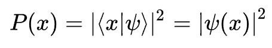
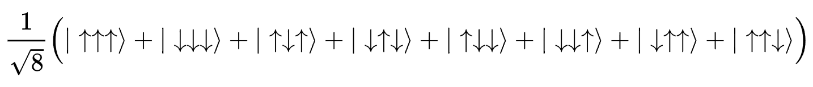
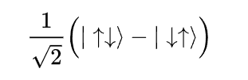
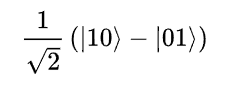

El entrelazamiento cuántico (Quantenverschränkung, originariamente en alemán) es una propiedad predicha en 1935 por Einstein, Podolsky y Rosen (en lo sucesivo EPR) en su formulación de la llamada paradoja Einstein-Podolsky-Rosen o paradoja EPR. El término fue introducido en 1935 por Erwin Schrödinger para describir un fenómeno de mecánica cuántica que se demuestra en los experimentos, cuya relevancia para la física teórica no fue bien comprendida inicialmente. Un conjunto de partículas entrelazadas (en su término técnico en inglés: entangled) no pueden definirse como partículas individuales con estados definidos, sino como un sistema con una función de onda única para todo el sistema. El entrelazamiento es un fenómeno cuántico, sin equivalente clásico, en el cual los estados cuánticos de dos o más objetos se deben describir mediante un estado único que involucra a todos los objetos del sistema, aun cuando los objetos estén separados espacialmente. Esto lleva a correlaciones entre las propiedades físicas observables. Por ejemplo, es posible preparar (enlazar) dos partículas en un solo estado cuántico de espín nulo, de forma que cuando se observe que una gira hacia arriba, la otra automáticamente recibirá una «señal» y se mostrará como girando hacia abajo, pese a la imposibilidad de predecir, según los postulados de la mecánica clásica, qué estado cuántico se observará. Esas fuertes correlaciones hacen que las medidas realizadas sobre un sistema parezcan estar influyendo instantáneamente en otros sistemas que están entrelazados con él, y sugieren que alguna influencia se tendría que estar propagando instantáneamente entre los sistemas, a pesar de la separación entre ellos. No obstante, no parece que se pueda transmitir información clásica a velocidad superior a la de la luz mediante el entrelazamiento porque no se puede transmitir ninguna información útil a más velocidad que la de la luz. Sólo es posible la transmisión de información usando un conjunto de estados entrelazados en conjugación con un canal de información clásico, también llamado teleportación cuántica. Mas, por necesitar de ese canal clásico, la información útil no podrá superar la velocidad de la luz. El entrelazamiento cuántico fue en un principio planteado por sus autores (Einstein, Podolsky y Rosen) como un argumento en contra de la mecánica cuántica, en particular con vistas a probar su incomprensión puesto que se puede demostrar que las correlaciones predichas por la mecánica cuántica son inconsistentes con el principio del realismo local, que dice que cada partícula debe tener un estado bien definido, sin que sea necesario hacer referencia a otros sistemas distantes. Con el tiempo se ha acabado definiendo como uno de los aspectos más peculiares de esta teoría, especialmente desde que el físico norirlandés John S. Bell diera un nuevo impulso a este campo en los años 60 gracias a un refinado análisis de las sutilezas que involucra el entrelazamiento. La propiedad matemática que subyace a la propiedad física de entrelazamiento es la llamada no separabilidad. Además, los sistemas físicos que sufren entrelazamiento cuántico son típicamente sistemas microscópicos (casi todos los que se conocen de hecho lo son), pues, según se entendía, esta propiedad se perdía en el ámbito macroscópico debido al fenómeno de la decoherencia cuántica. Sin embargo, más recientemente, un experimento ha logrado el entrelazamiento en diamantes milimétricos, llevando así este fenómeno al nivel de lo macroscópico. El entrelazamiento es la base de tecnologías en fase de desarrollo, tales como la computación cuántica o la criptografía cuántica, y se ha utilizado en experimentos de teleportación cuántica. El debate sobre si el entrelazamiento es un efecto cuántico o una evidencia del determinismo de fenómenos no observables sigue en la actualidad.
En el contexto original del artículo de EPR, el entrelazamiento se postula como una propiedad estadística del sistema físico formado por una pareja de electrones que provienen de una fuente común y están altamente correlacionados debido a la ley de conservación del momento lineal. Según el argumento de EPR, si, transcurrido un cierto tiempo desde la formación de este estado de dos partículas, realizásemos la medición simultánea del momento lineal en uno de los electrones y de la posición en el otro, habríamos logrado sortear las limitaciones impuestas por el principio de incertidumbre de Heisenberg a la medición de ambas variables físicas, ya que la alta correlación nos permitiría inferir las propiedades físicas correlativas de una partícula (posición o momento) respecto de la otra. Si esto no fuera así, tendríamos que aceptar que ambas partículas transmiten instantáneamente algún tipo de perturbación que a la larga (cuando se recopilan los datos estadísticos) tendría el efecto de alterar las distribuciones estadísticas de tal forma que el principio de Heisenberg quedase salvaguardado (haciendo más indefinida la posición de una de las partículas cuando se mide el momento lineal de la otra, y viceversa). Es importante señalar que los términos simultáneamente o instantáneamente, que acabamos de usar, no tienen en realidad significado preciso dentro del contexto de la teoría de la relatividad especial, que es el esquema universalmente aceptado para la representación de sucesos en el espacio-tiempo. Debe interpretarse por lo tanto que las mediciones antes mencionadas se hacen en un intervalo temporal tan breve que es imposible que los sistemas se comuniquen con una celeridad menor o igual que la establecida por el límite que impone la velocidad de la luz o velocidad máxima de propagación de las interacciones.
Hoy día se prefiere plantear todas las cuestiones relativas al entrelazamiento usando fotones (en lugar de electrones) como sistema físico a estudiar y considerando sus espines como variables físicas a medir. El motivo es doble: por una parte es experimentalmente más fácil preparar estados coherentes de dos fotones (o más) altamente correlacionados mediante técnicas de conversión paramétrica a la baja que preparar estados de electrones o núcleos de átomos (en general materia leptónica o bariónica) de análogas propiedades cuánticas; y por otra parte es mucho más fácil hacer razonamientos teóricos sobre un observable de espectro discreto como el espín que sobre uno de espectro continuo, como la posición o el momento lineal. De acuerdo con el análisis estándar del entrelazamiento cuántico, dos fotones (partículas de luz) que nacen de una misma fuente coherente estarán entrelazados; es decir, ambas partículas serán la superposición de dos estados de dos partículas que no se pueden expresar como el producto de estados respectivos de una partícula. En otras palabras: lo que le ocurra a uno de los dos fotones influirá de forma instantánea a lo que le ocurra al otro, dado que sus distribuciones de probabilidad están indisolublemente ligadas con la dinámica de ambas. Este hecho, que parece burlar el sentido común, ha sido comprobado experimentalmente, e incluso se ha conseguido el entrelazamiento triple, en el cual se entrelazan tres fotones.
Desde el punto de vista matemático la no separabilidad se reduce a que no es posible factorizar la
distribución de probabilidad estadística de dos variables estocásticas como producto de distribuciones
independientes respectivas:
 
Px1, x2(x1, x2) ≠
Px1(x1)Px2(x2)
Esto es equivalente a la condición de dependencia estadística (no independencia) de ambas
variables. Para cualquier sistema físico que se halle en un estado puro, la mecánica cuántica
postula la existencia de un objeto matemático denominado función de onda, que codifica todas sus
propiedades físicas en forma de distribuciones de probabilidad de observar valores concretos de
todas las variables físicas relevantes para la descripción de su estado físico.
Dado que en mecánica cuántica la distribución de probabilidad de cualquier observable X se
obtiene, en notación de Dirac, como el producto:
cualquier estado de dos partículas que se exprese como una superposición lineal de dos o más
estados que no sea factorizable como producto de estados independientes hará que las
distribuciones de probabilidad para observables de ambas partículas sean en general
dependientes:
Visto así, parecería que la condición de entrelazamiento sería la más común y de hecho la
factorizabilidad de los estados la menos habitual. El motivo de que no sea así es que la mayoría
de los estados que observamos en la naturaleza son estados mezcla estrictos.
El estado de espín 1/2:

Hoy en día se buscan aplicaciones tecnológicas para esta propiedad cuántica. Una de ellas es la llamada teleportación de estados cuánticos, si bien parecen existir limitaciones importantes a lo que se puede conseguir en principio con dichas técnicas, dado que la transmisión de información parece ir ligada a la transmisión de energía (lo cual en condiciones superlumínicas implicaría la violación de la causalidad relativista). Es preciso entender que la teleportación de estados cuánticos está muy lejos de parecerse a cualquier concepto de teleportación que se pueda extraer de la ciencia ficción y fuentes similares. La teleportación cuántica sería más bien un calco exacto transmitido instantáneamente (dentro de las restricciones impuestas por el principio de relatividad especial) del estado atómico o molecular de un grupo muy pequeño de átomos. Piénsese que si las dificultades para obtener fuentes coherentes de materia leptónica son grandes, aún lo serán más si se trata de obtener fuentes coherentes de muestras macroscópicas de materia, no digamos ya un ser vivo o un chip con un estado binario definido, por poner un ejemplo. El estudio de los estados entrelazados tiene gran relevancia en la disciplina conocida como computación cuántica, cuyos sistemas se definirían por el entrelazamiento.
Al considerar el entrelazamiento cuántico como un recurso que puede ser consumido para llevar a cabo ciertas tareas, surgió la idea de definir una magnitud para cuantificarlo. Esta no es una tarea trivial, y el resultado aún no está bien definido. Sin embargo, algunos puntos sí han sido bien establecidos. Se ha determinado que existen estados que están máximamente entrelazados, por ejemplo, un sistema de dos qúbits en un estado de Bell como:

tiene el entrelazamiento máximo posible para un sistema de dos qúbits. En el otro extremo, los estados separables no están entrelazados en absoluto. Otra condición fundamental es que no es posible incrementar el entrelazamiento únicamente mediante operaciones locales y comunicación de información clásica. En otras palabras, para aumentar el entrelazamiento entre dos qúbits hay que acercarlos y dejar que interactúen directamente. Partiendo de estas condiciones, se han establecido una serie de posibles definiciones y de funciones para cuantificar el entrelazamiento, entre ellas la entropía.